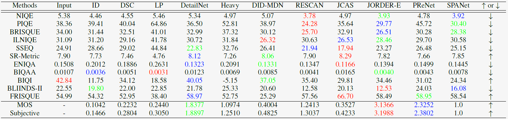

Single Image Deraining: From Model-Based to Data-Driven
and Beyond
Abstract
Rain removal or deraining methods attempt to restore the clean background scenes from images degraded by rain streaks and rain accumulation (or rain veiling effect). The early single-image deraining methods employ optimization methods on a cost function, where various priors are developed to represent the properties of rain and background-scene layers. Since 2017, single-image deraining methods step into a deep-learning era. They are built on deep-learning networks, i.e. convolutional neural networks, recurrent neural networks, generative adversarial networks, etc., and demonstrate impressive performance. Given the current rapid development, this article provides a comprehensive survey of deraining methods over the last decade. The rain appearance model are first summarized, and then followed by the discussion on two categories of deraining approaches: model-based and data-driven approaches. For the former, we organize the literature based on their basic models and priors. For the latter, we discuss several ideas on deep learning, i.e., models, architectures, priors, auxiliary variables, loss functions, and training datasets. This survey presents milestones in cuttingedge single-image deraining methods, reviews a broad selection of previous works in different categories, and provides insights on the historical development route from the model-based to data-driven methods. It also provides performance comparisons quantitatively and qualitatively. Beyond discussing existing deraining methods, we also discuss future directions and trends.
Method Review
Fig. 1. Milestones of single image rain removal methods, including sparse coding, Gaussian mixture model, deep convolutional network, generative adversarial network, semi/un-supervised learning, and benchmark.
Fig. 2. The improvement of single-image rain removal, from model-based methods to data-driven approaches.
Fig. 3. Summary of the side information and priors for single-image rain removal.
Fig. 4. The basic block improvement route for single-image rain removal.
Rain Synthetic Model Review
Dataset Review
Quantitative Evaluation
Fig. 10. The objective results of different methods. Top panel: PSNR. Bottom panel: SSIM. All methods are sorted by year. A red curve
connects the top performance from 2015 to 2019. It is shown that, the objective performance gains converge gradually.
Qualitative Evaluation
Fig. 12. Visual results of different methods. 1st and 2nd panels: rain images with large rain streaks. 3th and 4th panels: rain images including rain accumulation. 5th panel: rain images including both large rain streaks and accumulation.
Table 6. The no-reference metric results of different methods. Heavy denotes HeavyRainRemoval. Red, blue, and green denote the best, second best, and third best results.
Reference
[54] H. Wang, Y. Wu, M. Li, Q. Zhao, and D. Meng, "A Survey on Rain Removal from Video and Single Image," arXiv eprints, p. arXiv:1909.08326, Sep 2019.
Citation
@inproceedings{Single_image_rain_survey, author={Wenhan Yang, Robby T. Tan, Shiqi Wang, Yuming Fang, and Jiaying Liu}, booktitle={arXiv}, title={Single Image Deraining: From Model-Based to Data-Driven and Beyond}, year={2019}, }